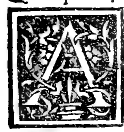

CAPITOLO VII¶
In quello sienno differenti le tre spetie de dicte colonne fra loro.

Ancora douete notare che dicte sorti de colonne cioè Jonica Dorica e corinta. tutte quanto olor basi, e stilobata se fanno a vn medesimo modo. Ma li lor capitelli sonno diuersi.
Quello dela ionica o voi dir puluinata fia malenconico. peroche non leua in su ardito che representa cosa malenconica e flebile vidouile. leua diete capitello solo mezza testa, cioè mezza grossezza dela colonna senzaltro abaco e altra cimasa. Ma solo ha li voluti circuncirca reuolti in giù verso la longheza de la colonna a similitudine dele donne afflicte scapegliate.
Ma la corinta ha el suo capitello eleuato e adorno de fogliami e uoluti con suo abaco e cimasa comme se dicto a similitudine dele giouine polite alegre e adorne con loro balzi, a cui instantia foron dicate. e a queste tali per più legiadria se costumato dali antichi loro altezze diuidere in 8 parti equali e luna far grossezza, cioè dyametro de sua inferiore contractura. che vengano nel aspecto dare più vaghezza. Ma queste tali non se vsato ponere in difficii troppo grani. Ma a luochi ligiadri. comme logge giardini baladori e altri lochi deambulatorii.
Le doriche hano lor capitelli alti ala già dieta mesura e proportione. ma non con tanto ornamento ma puro e semplici tamburo ouero timpano ala similitudine virile, comme Marte Hercule etc. aliquali per honore foron dicate. E queste sorte (benché oggi poco fasi) per esser schiete e semplici sonno più gagliarde che le corinte a sustenere el peso. La cui altezza li antichi hano costumato diuidere in 6 equali parti. Peroche li Ionici non hauendo lor symmetria ma a caso factone nel tempio trouando la forma e traccia auer vestigio del pede humano. qual proportionando a sua statura trouaro che gliera la sexta parte daltezza del corpo humano.
E atal proportione prima costumaro for laltezza e grosseza de dicte colonne rotonde. Commo dici el nostro Victruuio in lo 5. libro al primo capitulo e ancora in 7. secondo li lochi doue. lauiano a deputare. E cosi ancor le Joniche sonno aptissime al peso diuise ala similitudine dele doriche. Benché comme e dicto dele doriche per non rendere alochio venusta, pero al presente se ne vsano. lacui memoria asai vi giouera a fare le cose vtile più che pompose, hauendo voi a libito a disponerle. Altramente obedite al pagatore e più non sia.
Comme se sia succedendo dainde in qua diuersi ingegni e nationi se costumato far a libito dicte colonne e quelle nominare diuersamente e lor capitelli e basi e stilobate, e cosi ogni lor parte e anche in li altri hedificii. Comme dici Victruuio nel vltimo del primo capitulo del suo 4. libro, videlicet. Sunt autem quae hisdem columnis iraponuntur capitulorum genera variis vocabulis nominata. Quorum nee proprietates symmetriarum nee columnarum genus aliud nominare possumus sed ipsorum vocabula traducta et commutata ex corinthiis et puluinatis et doricis videmus.
Quorum symmetriae sunt in nouarum etc. in modo che ora de tutto se facto vn ciabaldone chiamendole alor modo. Ma pur li capitelli le fano diuerse per lor varietà. E a vostra consolatione e nostra confirmatione del sucinto discorso facto qui la dignissima auctorita del nostro Victruuio aponto vi pongo tracta del suo preallegato quinto libro, videlicet. Hae ciuitates cum Caras et lelegas eiecissent: eam terrae regionera a duce suo Jone appellauerunt Joniam.
Ibique tempia deorum immortalium constituentes ceperunt phana aedifìcare. et primum Apollini pandioni aedem vti viderunt in Achaia constituerunt: et eam Doricum appellauerunt. quod in doricon ciuitatibus primum factum eo genere viderint: In ea aede cum voluissent columnas collocare non habentes symmetrias earum: et querentes quibus rationibus efficere possent: vti et ad onus ferendum essent idoneae et in aspectu probatam haberent venustatem: dimensi sunt virilis pedis vestigium: et id in altitudine rettulerunt. Cum inuenissent pedem sextam partem esse altitudinis in homine: item in columnam transtulerunt: et qua crassitudine fecerunt basini scapi tantam sex cum capitulo in altitudinem extulerunt. Ita Dorica columna virilis corporis proportionem et firmitatem et venustatem in aedifìciis praestare coepit.
Item postea Dianae constituere aedem quaerentes: noni generis speciem iisdem vestigiis ad muliebrem transtulerunt gracilitatera et fecerunt primo columnae crassitudinem octaua parte: vt haberent speciem excelsiorem: basi spiram apposuerunt pro calceo: capitulo volutas vti capillamento concrispatos circinos praependentes dextra ac siuistra coUocauerunt. et cimatiis et encarpis pro crinibis dispositis frontes ornauerunt. truncoque roto strias vti stolarum rugas matronali more demiserunt: ita duobus discriminibus columnarum inuentionem: vnam virili sine ornatu nudam speciem: alteram muliebri subtilitate et ornatu symmetriaque sunt uisitati.
Posteri vero elegantia subtilitatequc iudiciorum progressi gracilioribus modulis delectati septem crasi situdinis dvametros in altitudinem columnae doricae: ionicac nouem conslituerunt. Id autem quod iones fecerunt primo ionicum est nominatum. Tertium vero: quod Corinthion dicitur virginalis habet gracilitatis imitationem: quod virgines propter aetatis teneritatem gracilioribus membris figuratae effectus recipiunt in ornatu venustiores. Eius autem capituli prima inuentio sie memoratur esse facta: Virgo ciuis corinthia iam matura nuptias implicata morbo decessiti post sepulturam eius quibus ea virgo poculis delectabatur nutrix collecta et composita in Calatho pertulit ad monumentum: et in summo collocauit: et vti ea permanerent diutius sub diuo tegula texit.
Is calathus fortuito supra achanti radicem fuerat collocatus: interim pondere pressa radix achanti media folia et cauliculos circa vernum tempus profudit: cuius cauliculi secundum calathi latera crescentes: et ab angulis tegulae ponderis necessitate expressi: flexuras in extremas partes volutarum facere sunt coacti. tunc Callimachus qui propter elegantium et subtilitatem artis marmoreae ab Atheniensibus cathatecnos fuerat nominatus: praeteriens hoc monumentum animaduertit eum calathum: et circa foliorum nascentem temeritatem: delectatusque genere et formae nouitate ad id exemplar columnas apud corinthios fecit: svmmetriasque constituit: ex eo quod in operum perfectionibus corinthii generis distribuit rationes eius autem capituli symmetria sic est facienda: vti quanto fuerit crassitudo imae columnae etc.